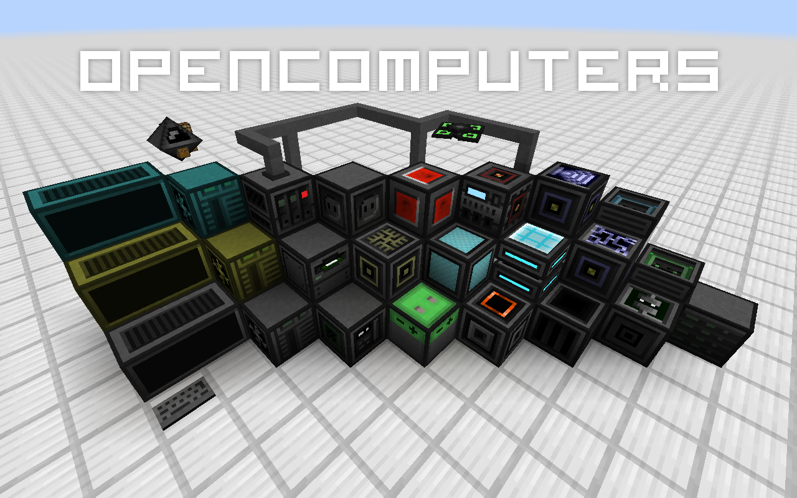

OpenComputers is a Minecraft mod that adds programmable computers and robots to the game. The built-in computer implementation uses Lua 5.2 and is fully persistent. This means programs will continue running across reloads. For more information, please see the wiki. Feel invited to visit the community forums or drop by in the IRC channel #oc on esper.net.
A few useful links:
Minecraft Forum Thread
Downloads
Bug Tracker
Wiki
Ingame Manual
IRC
* Community Forums
Experimental Builds
You can find experimental builds on the build server. Expect these to be generally more unstable than builds marked as releases. Use these at your own risk, but - when using the latest one - please do report bugs you encounter using them. Thanks!
License / Use in Modpacks
This mod is licensed under the MIT license. All assets are public domain, unless otherwise stated; all are free to be distributed as long as the license / source credits are kept. This means you can use this mod in any mod pack as you please. I'd be happy to hear about you using it, though, just out of curiosity.
Contributing
Assets and Localizations
- Translations
Translations to other languages are very much appreciated. You can find the localization files in this folder. If a localization you wanted to create already exists, please take the time to see if the present one is complete - the strings change every so often, invalidating some of the translations. If you start a fresh localization, please base it off of the English or German one, those are the 'master' localization files. If you add a new language, please also add it to the pack.mcmeta file. Keep it sorted alphabetically, use the name and region Minecraft itself uses. If you don't know how to do that, that's OK, I'll do it later.
- Textures
If you would like to contribute better textures for certain items or blocks, feel free to pull-request them. If you would like to contribute alternative textures, make it a resource pack, and post it on the forums, for example.
- Documentation
Help with keeping the wiki up to date would be really appreciated. If you notice anything amiss and know better, fix it. If you don't ask someone who does, then fix it. If you had a question answered, consider adding that information somewhere in the wiki where you would have expected to find that information.
There are also the files containing the ingame help for programs and for blocks and items, which could probably be much better than they are right now. Improvements to them, and new ones (e.g. for the libraries, such as text or sides) would help a lot. Thanks!
- Robot Names
Robots get a random name when placed (unless set with an Anvil). The list the names are chose from can be found here. Feel free to pull request additional names! However: since the list has grown to a considerable length already, here are the two basic criteria for new names: it must either be a real or fictional robot, or an AI that at least appears to be self-aware.
Bug fixes, features and scripts
- Bugs
If you've found a bug, please report it in the issue tracker, after checking it has not been reported before - and possibly even fixed by now. If you think you can and have fixed it, feel free to do a pull request, I'll happily pull it if it looks all right to me - otherwise I'll gladly tell you what to change to get it merged.
- Features
If you'd like to propose a new feature, take it to the forums or the issue tracker. If you'd like to contribute code that adds new features, please make sure to discuss the feature with me, first - again, the issue tracker is an OK place for this, there are a couple of feature requests there, already. Alternatively start a topic on the forums to discuss the feature, and / or stop by the IRC to talk about it. Blind / unexpected feature pull requests might very well not make it, so save yourself some time by talking about it, first! Thanks.
- Scripts / Programs
OpenComputers generates floppy disks in dungeon chests that can contain data from a selection of 'loot' directories. For example, the IRC client and the Better Shell (besh) are two programs that can be found on such loot disks. If you'd like to contribute a program that can be found this way, please have a look at the loot readme, which explains how to add custom loot. Simply pull request your loot!
- Core Scripts
If you would like to contribute scripts to the "core" Lua code (which basically defines 'OpenOS'), please have a look at the code conventions for Lua to save us all some time. Bug fixes are always welcome. Additional programs and features should be kept small. Bigger programs (rule of thumb: larger than 3KiB) should go onto loot disks.
- Drivers
As of OC 1.4, mod interaction that was previously provided by OpenComponents it now fully integrated into OC itself. If you wish to contribute a driver for blocks from other mods, cool! Have a look at the integration package to get an idea of how to structure modules and read the readme in that package for more information (in particular on additional criteria to get your PR merged).
Pull requests
The following are a few quick guidelines on pull requests. That is to say they are not necessarily rules, so there may be exceptions and all that. Just try to stick to those points as a baseline.
- Make sure your code is formatted properly.
- Make sure it builds and works.
- Try to keep your changes as minimal as possible. In particular, no whitespace changes in existing files, please.
- Feel free to code in Java, but don't be surprised if I convert it to Scala later on, if I feel it makes the code more concise ;-)
- When adding mod dependencies, keep them weak, i.e. make sure OC still works without that mod. Also, prefer adding a Gradle dependency over adding API class files to the repo.
- Squash your commits!
Also, and this should go without saying, your contributed code will also fall under OC's license, unless otherwise specified (in the super rare case of adding third-party stuff, add the according license information as a LICENSE-??? file, please).
Extending
In your own mod
To use the API in your own mod, either get the API JAR from the build server, or if you're using Gradle, add a dependency to the maven repo:
groovy
repositories {
maven { url = "http://maven.cil.li/" }
}
dependencies {
compile "li.cil.oc:OpenComputers:MC1.7.10-1.5.+:api"
}
Adjust the version number accordingly to the version you'd like to build against.
To run the mod in your development environment, download the dev JAR from the build server and drop it into your development environment's eclipse/mods (Eclipse) or run/mods (IntelliJ IDEA) folder.
Alternatively, leave out the api classifier and you can build against the dev JAR directly. This way you don't have to add it to your mods folder, but you will have to add -Dfml.coreMods.load=li.cil.oc.common.launch.TransformerLoader to the VM options in your run configuration.
If you have any questions, please do not hesitate to ask, either in the forums or in the IRC!
OpenComputers
Want to tinker with the mod itself? Here is how - for IntelliJ IDEA users.
Important
- Make sure you have the Gradle plugin enabled in IntelliJ IDEA (File->Settings->Plugins).
- Make sure you have the Scala plugin enabled.
Clone the repository, then in it run
gradlew setupDecompWorkspace
to setup the workspace, including assets and such, then
gradlew idea
to create an IntelliJ IDEA project.
Open the project and you will be asked to import the Gradle project (check your Event Log if you missed the pop-up). Do so. This will configure additionally referenced libraries.
For more specific instructions, read Steps to run master MC1.7.10 from IDEA
In the case you wish to use Eclipse rather than IntelliJ IDEA, the process is mostly the same, except you must run gradlew eclipse rather than gradlew idea.